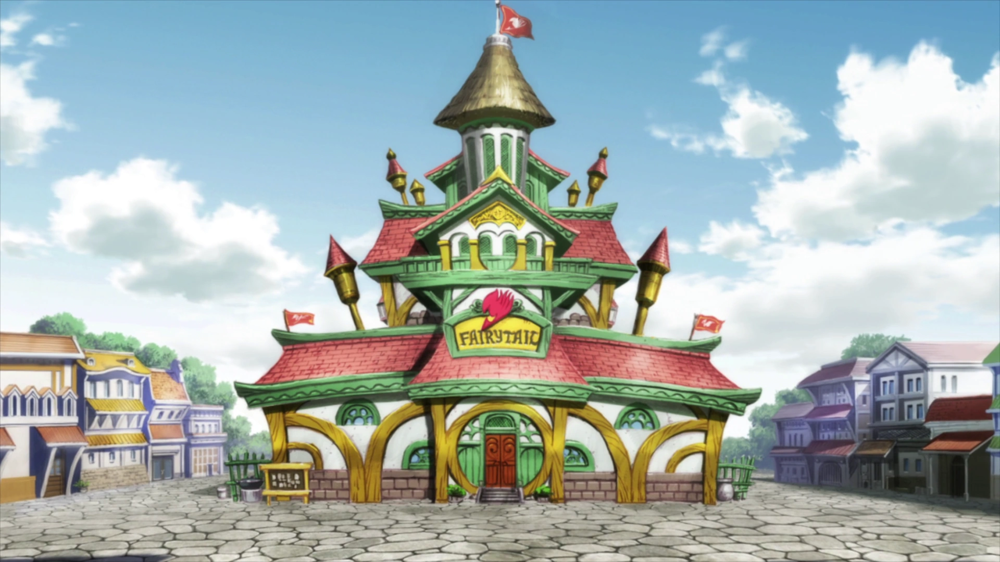

Natsu a été élevé par le dragon Igneel et a appris la magie du Chasseur de Dragons. Natsu avait cru qu'il avait été abandonné par Igneel le 7 juillet X777, mais en réalité c'est le même jour et la même année où Natsu s'est réveillé dans le futur, tout comme les quatres autres Chasseur de Dragons. Natsu part à la recherche d'Igneel après son réveil, et Makarov Dreyar, le maître du guilde de Fairy Tail, finit par le retrouver. Natsu finit par rejoindre Fairy Tail, où il développe une rivalité avec Erza Scarlet et Gray Fullbuster. Il s'entendait également bien avec Elfman et Lisanna Strauss dès qu'il a rejoint la guilde.
 La loyauté de Natsu envers Fairy Tail est incomparable. Il part en aventures avec ses amis Happy, Lucy, Gray et Erza, créant des liens indestructibles.La guilde la plus puissante du Royaume de Fiore est Fairy Tail. Le terme « Fairy Tail » représente un esprit d'exploration pour en apprendre plus sur le destin et les mystères. Selon certaines rumeurs, le fondateur de la guilde Fairy Tail serait une véritable fée. Il est révélé qu'en l'an X686, Mavis Vermillion, Precht, Warrod Sequen et Yuri Dreyar ont créé la guilde Fairy Tail. Bien que Fairy Tail existe depuis plusieurs décennies, ce n'est que récemment qu'elle est devenue aussi puissante et connue.
Natsu devient de plus en plus fort en maîtrisant sa magie de Chasseur de Dragons et affronte de puissants ennemis pour protéger ceux qu'il aime. Par contre, en tant que Chasseur de Dragons, Natsu souffre du mal des transports. Natsu est malade lorsqu'il prend n'importe quel moyen de transport, même s'il s'agit d'une autre personne, comme il l'a montré lorsqu'il s'est fait porter par Lucy. Cependant, cela ne s'applique pas à Happy, car il le considère comme sa famille, et non comme un moyen de transport.